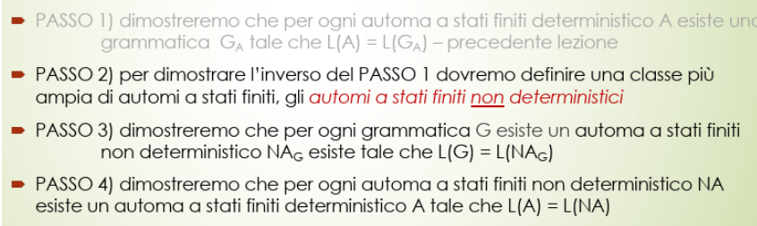
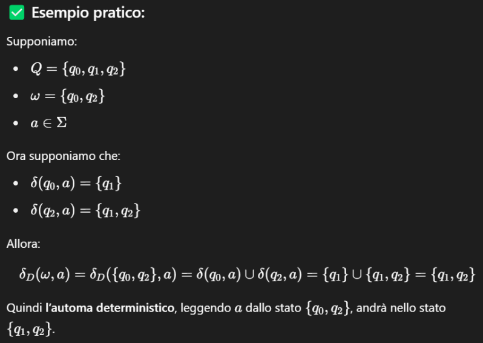
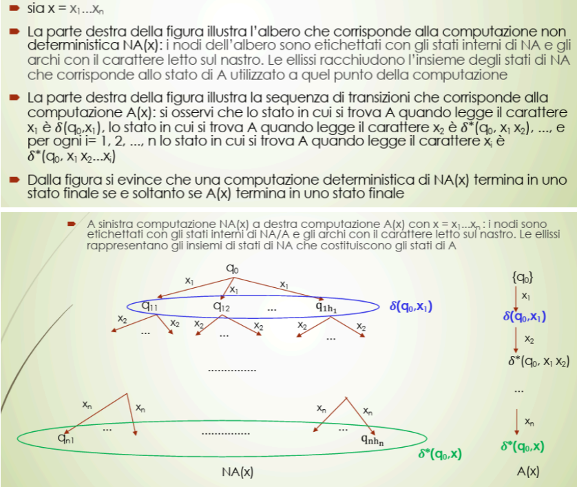
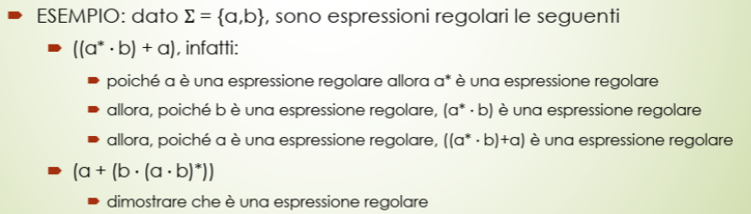

Dobbiamo continuare il discorso dell’ultima volta 
PASSO 2 (inverso)
per inverso si intende che per una grammatica ci sarà un automi a stati finiti non deterministico che la riconosce
Automa a stati finiti NON DETERMINISTICO
Un automa a stati finiti non deterministico (ASFND) è una quintupla dove:
- è l’alfabeto
- è l’insieme degli stati
- è lo stato iniziale
- è l’insieme degli stati finali
- è la funzione di transizione non deterministica
La differenza sostanziale con un ASFD sta nella funzione di transizione : invece di associare un solo stato come nei deterministici, qui associa un insieme di stati
Formalmente: cioè: per ogni coppia (stato, simbolo), ti restituisce un insieme di stati possibili. Questa è una funzione TOTALE.
- una funzione totale è una funzione che è definita per ogni possibile input nel dominio.
🔁 Le definizioni (configurazione, transizione, funzione estesa) sono simili.
✅ Quando un ASFND accetta una parola?
Se esiste almeno una sequenza di scelte che ti porta in uno stato finale.
Formalmente:
- Sia
- L’ASFND accetta se esistono stati tali che:
- …
📌 Cioè: almeno un percorso porta in uno stato finale.
Significato effettivo di
📌 Cosa significa ""?
= insieme degli stati raggiungibili leggendo un singolo simbolo
= insieme degli stati raggiungibili leggendo una stringa (in questo caso di lunghezza 1)
👉 Quindi in questo caso specifico, coincide con ,
ma la notazione con l’asterisco viene usata per uniformità, perché può generalizzare a stringhe più lunghe.
✳️ Conclusione
Il linguaggio accettato da un ASFND è l’insieme delle parole per cui esiste almeno un cammino che termina in uno stato finale.
Altro modo (più compatto) per dire quello che abbiamo detto ora
“Un ASFND accetta una parola se ”
Tradotto
L’automa accetta la parola se, leggendo dallo stato iniziale , esiste almeno un cammino che porta in uno stato finale.
In simboli:
Passo 3
Teorema G.15
Per ogni grammatica regolare esiste un ASFND tale che
In parole semplici
Il teorema dice che ogni grammatica regolare può essere simulata da un automa a stati finiti non deterministico, cioè che i linguaggi generati da grammatiche regolari possono anche essere riconosciuti da questi automi non deterministici.
🔍 Come funziona la dimostrazione
- Costruzione dell’automa a partire dalla grammatica
- Supponiamo di avere le produzioni nella forma
- L’automa verrà costruito in questo modo
- L’alfabeto dell’automa è
- Gli stati corrispondono ai simboli non terminali della grammatica, più uno stato
- Lo stato iniziale corrisponde a
- Le transizioni sono definite
📍Dimostrazione
✍️ Passaggi chiave:
Supponiamo che:
- La grammatica G abbia produzioni nella forma: $$ B_0 \rightarrow x_1 B_1, \quad B_1 \rightarrow x_2 B_2, \quad \dots, \quad B_{n-2} \rightarrow x_{n-1} B_{n-1}, \quad B_{n-1} \rightarrow x_n
✅ Conclusione:
La sequenza di produzioni nella grammatica corrisponde a una sequenza di transizioni dell’automa che porta dallo stato iniziale allo stato finale , leggendo esattamente i simboli della parola .
Quindi:
Passo 4
Teorema G.16
Per ogni ASFND esiste un ASFD tale che
In parole semplici
Il teorema dice che qualsiasi automa a stati finiti non deterministico (ASFND) può essere trasformato in un automa deterministico (ASFD) che riconosce esattamente lo stesso linguaggio.
⚙️ Costruzione dell’automa deterministico A
Dati
- sia dato
- costruiamo
- Nota come opera sullo stesso alfabeto di
Struttura
-
Gli stati del nuovo automa deterministico sono tutti i sottoinsiemi degli stati di Ossia, se indichiamo , ciascun è un sottoinsieme di dell’automa
-
poniamo
-
poniamo Ossia gli stati finali di A sono tutti quei sottoinsiemi di che contengono almeno uno stato finale di
-
per ogni e , poniamo tale che La frase significa: “Per calcolare la transizione dell’automa deterministico da un insieme di stati , leggendo il simbolo , guarda dove può andare ciascuno dei singoli stati in nell’automa originale non deterministico, e poi metti insieme tutti i risultati: quello sarà il nuovo stato.”
-
la U indica l’unione di tutti gli insiemi delle transizioni delta
-
la macchina non deterministica ha una w che è un insieme di stati perché deve simulare la macchina non deterministica che ovviamente ne ha più di uno
- è una sorta di stratagemma per avere più stati in una macchina deterministica

Ora che abbiamo definito A, dobbiamo dimostrare che ossia che la parola è accettata dall’automa non deterministico se e solo se è accettata da quello deterministico che abbiamo costruito.
Lo vediamo informalmente 
Come vedi
- a sinistra abbiamo la computazione dell’automa NON DETERMINISTICO, il quale può avere più scelte
- a destra abbiamo la computazione dell’automa DETERMINISTICO
Possiamo quindi concludere che
Teorema G.17
La classe dei linguaggi regolari coincide con la classe dei linguaggi decisi da automi a stati finiti deterministici.
Chiusura: Unione, Intersezione e Complemento
Ci occupiamo ora di studiare se la proprietà di essere regolari si trasporta all’unione, all’intersezione e al complemento.
Unione
Se due linguaggi e sono regolari, allora anche è regolare.
🧠 Come lo si dimostra?
L’idea è usare un automa non deterministico (ASFND) per costruire un automa che riconosce , dato che conosciamo automi deterministici per e .
⚙️ Costruzione tecnica
Supponiamo di avere
-
: l’automa che decide
-
: l’automa che decide
Costruiamo un ASFND (automa non deterministico)
tale che riconosce .
Dettagli della costruzione
🧩 Stati
L’insieme degli stati è:
Aggiungiamo un nuovo stato iniziale , che non c’era né in né in .
✅ Stati finali
L’insieme degli stati finali è:
Cioè: sono finali tutti gli stati finali di e .
🔁 Funzione di transizione
Definita così:
-
Dal nuovo stato iniziale , per ogni simbolo :
👉 Cioè: da , l’automa può non deterministicamente iniziare a comportarsi come o come .
-
Per tutti gli altri stati:
- Se , allora:
- Se , allora:
🎯 Risultato
Questo automa può decidere perché:
- Dallo stato iniziale , può simulare sia che .
- Se la stringa appartiene a o a , esiste una computazione che porterà a uno stato finale.
- E quindi accetterà la parola.
Complemento
Se è un linguaggio regolare, allora anche (il suo complemento) è regolare.
🧠 Come si dimostra?
L’idea è
- partire da un automa che accetta , linguaggio regolare
- costruire un automa , complementare ad , che accetta
- dimostrare che questo nuovo automa è deterministico (ASFD) → è regolare
Infatti, si vuole sfruttare il fatto che i linguaggi regolari sono riconoscibili da automi deterministici (ASFD).
⚙️ Costruzione dell’automa per il complemento
Supponiamo di avere un ASFD che riconosce : → questo è l’automa che accetta solo le parole di .
✨ Come si costruisce ?
Si mantengono tutti gli elementi invariati, tranne gli stati finali. I nuovi stati finali saranno: → cioè tutti e soli gli stati dell’automa che non erano finali in .
- quindi praticamente gli stati finali di sono gli stati non finali di
Formalmente:
✅ Conclusione
- L’automa accetta tutte le stringhe che non vengono accettate da .
- Quindi accetta , il complemento di .
- Essendo un ASFD, allora anche è regolare.
Intersezione
Se e sono due linguaggi regolari, allora è regolare.
🧠 Strategia (usando complementi e unione)
La dimostrazione sfrutta le due proprietà di chiusura già dimostrate
- la classe dei linguaggi regolari è chiusa rispetto al complemento *
- la classe dei linguaggi regolari è chiusa rispetto all’unione *
E usa una legge di De Morgan dell’algebra degli insiemi
✨ Passaggi della dimostrazione
-
Se e sono regolai, allora anche i loro complementi e sono regolari *
-
Dato che i linguaggi regolari è chiusa rispetto all’unione *, allora anche è regolare
-
Ora che abbiamo formato un linguaggio unico (regolare), per la proprietà * sappiamo che il complemento di quel linguaggio è regolare
-
Ma questo è proprio l’intersezione
✅ Conclusione:
👉 Quindi anche l’intersezione è regolare.
Espressioni regolari
Le espressioni regolari sono uno strumento che permette di descrivere una particolare classe di linguaggi
Definizione
Dati
- un insieme di caratteri
- una parola
rsull’alfabeto dove- → unione (scelta di accettazione tra due alternative)
- Alternativa:
a + baccetta “a” o “b”
- Alternativa:
- → concatenazione
- Sequenza:
a · baccetta “ab”
- Sequenza:
- → chiusura di Kleene (ripetizione 0 o più volte)
- Ripetizione:
a*accetta "", “a”, “aa”, “aaa”, …
- Ripetizione:
- → per raggruppare
- Come nelle operazioni matematiche:
(a + b)*
- Come nelle operazioni matematiche:
- → il linguaggio vuoto
- Non accetta nessuna parola
- → unione (scelta di accettazione tra due alternative)
Abbiamo un’espressione regolare se
- , oppure
- , oppure
- dato due espressioni regolari
set, abbiamo che- , oppure
- , oppure

Secondo esempio
Andiamo per parti
- Tutte le
ae lebsono espressioni regolari ()- → concatenazione di due espressioni regolari → regolare
- → chiusura di Kleene → regolare
- → concatenazione di due espressioni regolari → regolare
- → chiusura di Kleene → regolare
- → unione di due espressioni regolari → regolare
- → raggruppamento → regolare
Interpretazione e significato
Se interpretiamo i simboli speciali (+, *, ·, ∅) come operazioni su insiemi di parole, e se consideriamo ogni carattere dell’alfabeto come un “singleton”
→ allora possiamo usare le espressioni regolari per definire linguaggi (insiemi di stringhe).
Cosa significa "singleton" in questo contesto?
Un singleton è un insieme che contiene un solo elemento. Nel contesto delle espressioni regolari:
- Ogni carattere dell’alfabeto (ad esempio
a,b,0,1, ecc.) viene interpretato come un insieme contenente solo quella parola. Per esempio:
- Il simbolo
arappresenta il linguaggio {a} → un singleton- Il simbolo
brappresenta {b} → un singleton- Il simbolo
0rappresenta {0} → un singleton
🔣 Interpretazione degli elementi di base
-
Simbolo
L’espressione regolare definisce il linguaggio vuoto: → cioè nessuna stringa è accettata. -
Simbolo L’espressione regolare definisce il linguaggio → cioè un singleton che contiene solo la parola formata da
🔁 Operatori composti
Date due espressioni regolari s e t, che definiscono i linguaggi e , allora:
-
Unione
+- definisce: → ossia l’unione tra due parole
-
Concatenazione
·- definisce: → ossia tutte le parole ottenuta concatenando una parola di con una parola di 💬 Ad esempio, se e , allora
-
Chiusura di Kleene
*- definisce: $$ L = \text{tutte le concatenazioni di } 0 \text{ o più parole in } L(s)